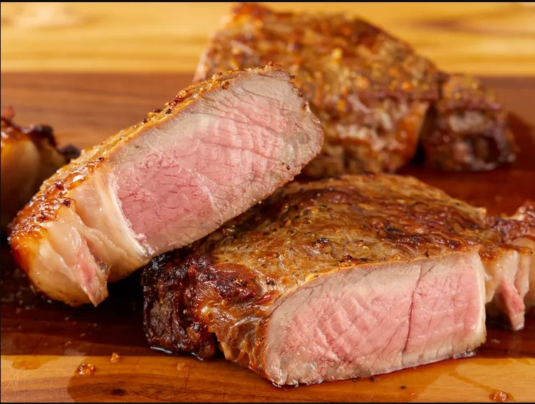

Air Fryer Rib-Eye Steak

Description
It's so easy to air-fry steaks in your air fryer. These definitely rival a steak cooked on the grill. You can marinate the rib-eyes in the morning before you leave for work, then cook them at night.
Ingredients
- 2 rib-eye steaks, cut 1 1/2- inch thick
- ½ cup reduced-sodium soy sauce
- ¼ cup olive oil
- 4 teaspoons grill seasoning
Directions
- Combine steaks, soy sauce, olive oil, and seasoning in a large resealable bag. Marinate meat for at least 2 hours.
- Remove steaks from the bag and discard marinade. Pat excess oil off steaks.
- Add about 1 tablespoon water to the bottom of the air fryer pan to prevent it from smoking during cooking. Preheat the air fryer to 400 degrees F (200 degrees C).
- Cook steaks in the preheated air fryer for 7 minutes, flip, and cook about 7 minutes more for medium-rare. For a medium, cook 8 minutes per side.
- Let steaks sit for about 5 minutes before serving.
Back to main